DCAMCUT specializes in wire erosion with CAD/CAM processes for precision, efficient, and high-quality manufacturing, ensuring compatibility with various file formats and offering advanced features like erosion contour recognition and 3D model erosion.
Im Bereich Software für den Werkzeug- und Formenbau, Maschinen und Anlagenbau, Extrusionswerkzeug- oder auch den Prototypenbau ist DCAM das einzige IT-Unternehmen, das sich ausschließlich auf die Drahterosion spezialisiert hat – und das bereits seit 30 Jahren. Resultat ist eine hocheffiziente Software, die Drahterodieren auf nativen Flächeninformationen direkt aus 3D-CAD Systemen unterstützt, daher präziseste Ergebnisse liefert und den individuellen unternehmensspezifischen Anforderungen gerecht wird.
Mit DCAMCUT können Sie sicher gehen, dass Sie Ihre Bauteile auf technisch höchstem und aktuellstem Niveau fertigen.
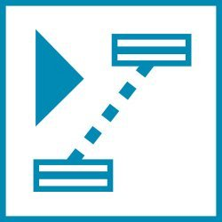
Das DCAMCUT Solo-System beinhaltet eine Vielzahl von Direktschnittstellen. Nahezu sämtliche Daten können somit im ursprünglichen Format importiert werden. Das erspart Ihnen nicht nur Zusatzkosten und Konvertierungsprobleme, es bringt auch zahlreiche Vorteile in der weiteren Bearbeitung mit sich.
Folgende Dateitypen sind konvertierungsfrei ins DCAMCUT Solo-System übertragbar:
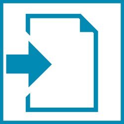
DCAMCUT ist in der Lage, jede gewünschte Erodierbearbeitung direkt auf den 3D-Modellen zu erzeugen, die Sie vorab im CAD-System konstruiert haben. Dadurch lässt sich die Erodierbarkeit von Geometrien zuverlässig prüfen.
Es entfallen zudem auch lästige und zeitaufwendige Schritte wie etwa das Ableiten von Konturen mittels Bauteilschnitten oder das Aufbereiten vorhandener Daten für das Erodieren.
Resultat für Sie: Bequemes, sicheres Arbeiten – und nicht zuletzt enorme Zeitersparnis.
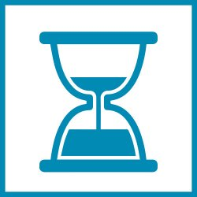
Dieses Feature sorgt für eine erhebliche Erleichterung beim Festlegen von Erodierkonturen: DCAMCUT erkennt die zu erodierenden Konturen vollautomatisch.
Darüber hinaus können Sie Ihre Geometrien bei Bedarf auch schrittweise erzeugen. Während der Bearbeitung bestimmen Sie dann jederzeit selbst, ob zum Beispiel einzelne Geometrieelemente oder auch ganze Bereiche des Werkstücks ausgespart werden sollen. Sie erodieren also immer nur genau das, was Sie erodieren wollen.
Dies erspart Ihnen nicht nur den zusätzlichen Arbeitsaufwand an PC und Maschine sondern auch unnötige Materialabfälle.
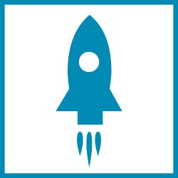
Unsere Vorlagen-Technologie ermöglicht Ihnen und Ihren Kollegen, sämtliche Bearbeitungsabläufe in katalogisierter Form abzulegen und sie jederzeit, auch modellübergreifend, wieder zu verwenden. Manuelle Fehlerquoten werden erheblich minimiert.
Dieses Feature bedeutet eine enorme Zeitersparnis durch den wegfallenden Programmieraufwand und langfristig durch die jederzeit für jeden abrufbare Wissensdatenbank.
Ein gesammelter Erfahrungsschatz - Arbeitsabläufe rationalisiert.
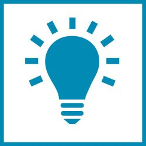
Die einzigartige NC-Prozessortechnik von DCAMCUT bietet Ihnen ein Maximum an Kontrolle über Ihre Programmierschritte, denn im Hintergrund generiert die Software den zugehörigen NC-Code. Dadurch können Sie noch während der Programmierung zu jedem Zeitpunkt überprüfen, ob diese Ihren Vorstellungen entspricht.
Zusätzliche Sicherheit verschafft Ihnen der NC-Browser: Nach der Programmierung können Sie hier jeden beliebigen Konturbereich, NC-Code-basiert, lokalisieren und nochmals überprüfen. Dieses Tool kann auch zusammen mit der 3D-Simulation genutzt werden. Der Erodierprozess wird dann noch transparenter dargestellt.
Unsere NC-Prozessoren sind übrigens keine Postprozessoren. Der Unterschied ist ebenso simpel wie gravierend: Herkömmlich wandelt ein Postprozessor erzeugte CAM-Strategien nachträglich in ein anderes Format um. So aber kann nicht gewährleistet werden, dass der an die Maschine gesendete NC-Code exakt Ihren Vorstellungen entspricht.
Mit unseren NC-Prozessoren dagegen werden als NC-Code nur die Werkzeugwege generiert, die Sie im Vorfeld mittels CAM-Strategien erzeugt haben. Hierbei werden z.B. all jene Geometriebereiche interpoliert, also in Folgen von Geraden und Kreisbögen zerlegt, die nicht ohne weiteres an die Maschinensteuerung zu übergeben sind (Spline-Kurven, Spline-Flächen) – und zwar so, dass nach Möglichkeit tangentiale Übergänge entstehen. So wird also dem Leistungsumfang der Maschinensteuerung Rechnung getragen.
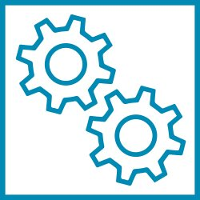
DCAMCUT beinhaltet in allen Ausbaustufen die Datenbanken der Maschinentypen, die für die Präzisionsarbeit im Erodierbereich benötigt werden.
Ab DCAMCUT 8.1 vollständig integriert sind überdies auch sämtliche Hersteller- und Anwenderqualitäten für die AGIE Vision-Steuerungen auf Windowsbasis inklusive Offsetwerte. Zusätzlich importiert und verwaltet werden können bei Bedarf auch die vom Maschinenhersteller oder vom Anwender erzeugten Anwenderqualitäten.
Für Sie bedeutet das nicht nur eine steuerungsnahe Programmierung – es entfallen auch maschinelle Zusatzarbeiten und die damit einhergehenden Standzeiten.
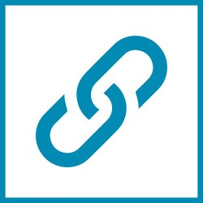
Mit dem NC-Bohrloch-Prozessor unterstützt DCAMCUT Ihre Startloch-Bohrmaschine, für die bei Bedarf auch problemlos bis zu fünf Achsen angesteuert werden können.
Auch schwierige Aufgaben z.B. des Schrägeinfädelns stellen damit kein Problem mehr da.
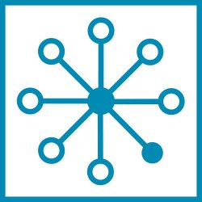
Die meisten nennen es schlicht Taschenerodieren – und wir haben dafür ein äußerst effektives Modul entwickelt: Es berechnet den kürzesten Weg, den der Draht zurücklegen muss, um Durchbrüche möglichst schnell und ohne unerwartete Ausfallteile zu bearbeiten.
Auch die heiklen Themen Inselausräumen oder partielles Ausräumen können Sie mit diesem Feature ohne Sorge in Angriff nehmen:
DCAMCUT trifft alle Vorbereitungen für einen weitestgehend bedienerautonomen Programmablauf an der Maschine.
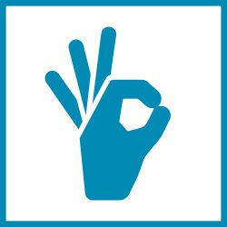
Noch vor Beginn Ihrer Erodierarbeiten zeigt Ihnen die Solid-Simulation / 3D-Abtragssimulation von DCAMCUT präzise auf, wie der Erodierprozess verlaufen wird, an welchen Punkten es zu Ausfallteilen kommen kann und wo Fehler auftreten könnten.
Verschnitte und Fehlproduktionen können somit von vornherein ausgeschlossen werden – ein unschätzbarer Zugewinn an Effizienz und Sicherheit.
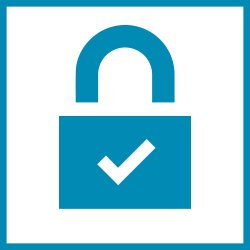
Dieses neu entwickelte Modul von DCAMCUT ermöglicht Ihnen, die Multifunktionalität heutiger Maschinen mit zusätzlichen Dreh- oder Schwenktischen voll auszuschöpfen:
Mit Hilfe von Dreh- und Schwenkachsen lassen sich Werkstücke nun auch simultan von mehreren Seiten erodieren. Das Fertigungsspektrum der Maschine wird dadurch enorm erweitert – bisher nicht erodierbare Geometrien sind nun ebenfalls realisierbar. Selbst komplexeste Geometrien unter extremen Winkellagen können mit einem Höchstmaß an Präzision hergestellt werden.
Ein weiteres Plus: Dank der beweglichen Zusatzachse können Sie Ihr Werkstück ganz einfach von allen Seiten bearbeiten. Das manuelle Umspannen entfällt – und damit auch ineffiziente Stillstandzeiten.
Ein sehr viel präziseres und ausdauernderes Arbeiten an den Maschinen.
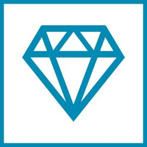